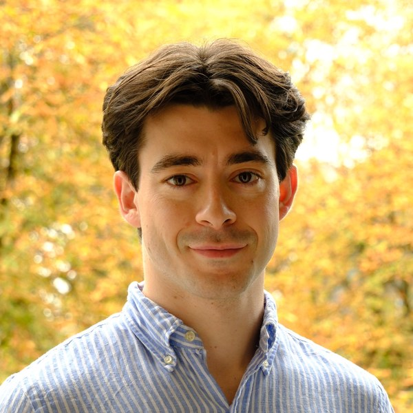

About
I am a PhD student at the Technical University of Munich, advised by Prof. Felix Dietrich (Physics-Enhanced Machine Learning). I received my B.Sc. (2022) and M.Sc. (2025) in Informatics from TUM.
My PhD started with machine learning surrogates for melt-pool dynamics in laser powder bed fusion, trained on smoothed particle hydrodynamics simulations, together with PD Dr.-Ing. habil. Stefan Adami. Along the way I began developing a simulator-agnostic pipeline for generating training datasets. I now research latent-space, random feature and structure-preserving models of physical systems, with uncertainty quantification, aimed at reliable digital twins.
Research interests
- Representations and latent-space dynamics of physical systems with operator- and measure-theoretic methods
- Structure-preserving machine learning based on Lagrangian and Hamiltonian mechanics
- Random feature models
- Generative models for simulation data, in particular conditional VAEs
- Uncertainty quantification, Gaussian processes, Bayesian optimization and active learning
- Graph neural networks for particle methods such as smoothed particle hydrodynamics
- Digital twins
Projects
- Learned particle relaxation for SPH ongoing
- A graph neural network corrector that relaxes disordered particle distributions in smoothed particle hydrodynamics, applied once as a short rollout instead of at every solver step. With F. Thiery, S. Adami and F. Dietrich.
- SimGen in development
- A simulator-agnostic framework for generating machine learning datasets from numerical simulations, with adapters for different solvers and a SLURM executor for HPC clusters.
- Melt-pool regime classification with cVAE ensembles in preparation
- Classifying keyhole and conduction regimes in laser powder bed fusion from SPH simulations with ensembles of conditional VAEs.
- Uncertainty-aware latent-space Bayesian optimization in preparation
- Combining Gaussian processes with the latent space of conditional VAEs to search process parameters while accounting for model uncertainty.
Student projects
I am happy to supervise theses, guided research and IDPs at TUM. Write me a few lines about yourself and what you would like to work on; your own ideas are welcome. Current directions include:
- Learning latent dynamics of physical systems with conditional VAEs
- Inferring hidden simulation quantities from experimentally observable signals
- Sample-efficient active level-set estimation for regime boundaries
Teaching
- Teaching assistant, Algorithms for Uncertainty Quantification (IN2345), TUM
- Teaching assistant, Scientific Machine Learning 1, TUM